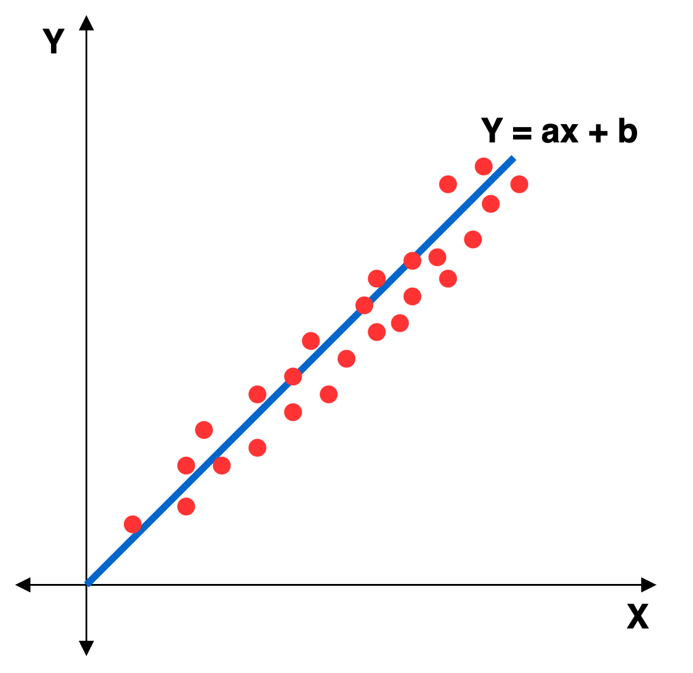
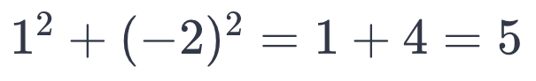
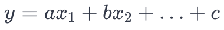

Regression analysis is the process of predicting a dependent variable (y) based on an independent variable (x). In more detail, regression analysis is a statistical methodology that quantifies the impact of an independent variable on a dependent variable. It involves creating a model to predict the value of the dependent variable for a given value of the independent variable. The main objective of regression analysis is to explain the dependent variable in terms of the independent variable. The terms used for the independent and dependent variables may differ in regression analysis. Independent variables are explanatory variables, predictors, or causal variables, while dependent variables are called target, objective, response, or outcome variables. To avoid confusion, one can infer from the names whether they are closer to the cause or effect and whether they are dependent or not. Regression analysis aims to describe the dependent variable using the independent variable. The prerequisite for performing regression analysis is maintaining four to five basic assumptions.
The fundamental assumptions of regression analysis, often referred to as the four or five key assumptions, are commonly known by the acronym LINE:
Linearity: There must be a linear relationship between all independent variables and the dependent variable.
Independence: Residuals (errors) should be independent of each other. There should be no correlation between residuals and independent variables.
Normality: Residuals should follow a normal distribution with a mean of 0.
Equal Variance (Homoscedasticity): The variance of residuals should be constant across all levels of independent variables.
No Multicollinearity: There should be no strong correlation among independent variables, as multicollinearity can affect the validity of regression analysis.
It's crucial to note that the considerations for normality, independence, equal variance, and linearity pertain to the residuals, not the independent variables. Residuals represent the differences between observed values and predicted values. Similarly, the term "error" is used to describe these differences in the population context.
Hypothesis Formulation: Set up null and alternative hypotheses.
Data Trend Examination: Conduct scatter plot analysis and correlation analysis to explore the relationship between independent and dependent variables.
Model Suitability Confirmation: Assess how well the model fits the data by examining the coefficient of determination (R-squared), analysis of variance (ANOVA), and verifying the basic assumptions of residuals (normality, homoscedasticity, independence, etc.).
Calculation and Significance Testing of Regression Coefficients: Evaluate the meaning of regression coefficients by assessing multicollinearity among independent variables and determining the significance of coefficients through t-tests. Additionally, choose and interpret variables as needed.
Model Selection: Select the final model by ensuring that it meets the basic assumptions and accurately represents the data.
Regression analysis is broadly categorized into two types: linear and logistic regression. Linear regression analysis involves using a continuous dependent variable, with the primary goal being prediction. To find the model, linear regression analysis utilizes the least squares method and employs tests such as t-tests and F-tests for model validation. Linear regression analysis further branches into simple linear regression analysis, multiple linear regression analysis, and nonlinear regression analysis. Simple linear regression analysis is conducted when one independent variable and one dependent variable exist. Multiple linear regression analysis is applied when there are numerous independent variables and one dependent variable. Nonlinear regression analysis deals with relationships that do not appear to be linear, such as those represented by quadratic or exponential functions.
Logistic regression analysis, on the other hand, models the relationship between independent variables and a categorical dependent variable. It is a statistical methodology used for analyzing or classifying the dependent variable. Logistic regression analysis utilizes categorical, continuous variables; its primary purpose is classification. The method employs maximum likelihood estimation to find the model and uses tests like the chi-square test for model validation.
The linear regression analysis to be applied in this project will be discussed in more detail below.
Linear regressionIt is an algorithm used for prediction problems in supervised learning. In this context, a prediction problem refers to predicting the 'value' when new data is input into a model (in this case, a regression model) generated based on existing data. However, linear regression analysis is fundamentally applicable when both the explanatory and response variables are continuous variables. If the explanatory variable is categorical, it needs to be transformed into dummy variables, and then linear regression analysis can be applied.
Linear regression aims to find a single line that represents the given data. This line is referred to as the regression line, and the expression of this line as a function is called the regression equation. The graph below visually represents simple linear regression, where this type of analysis expresses the relationship between the x variable and the y variable with a single linear equation such as y = ax + b. In the regression equation y = ax + b, it's evident that in simple linear regression, there is only one explanatory variable (x).
As mentioned earlier, regression analysis aims to find a single line that represents given data, and the choice of what 'represents' means will impact the regression line. Linear regression analysis uses the criterion of least squares method, also known as the method of least squares, to determine the regression line. To explain the least squares method, it's essential to understand the concept of residuals.
Residuals refer to the differences between the observed y values and the predicted y values. For instance, considering two points A(1, 4) and B(2, 3) with a regression equation of y = 2x + 1, the observed y value for point A is 4, and the predicted y value is 3. For point B, the observed y is 3, and the predicted y is 5. Therefore, the residual for point A is 4 - 3 = 1, and point B is 3 - 5 = -2.
The least squares method aims to find a line where the sum of the squared residuals is minimized. In the example above, the sum of squared residuals is 5, calculated as follows:
Linear regression analysis involves exploring different regression equations to minimize the sum of squared residuals, and the line that achieves this is considered the regression line. The function of this line is termed the regression equation.
Regression analysis involves the analyst specifying the data, x, and y variables. Using statistical tools, the process aims to determine the coefficients a and b in the regression equation y=ax+b by applying the least squares method. A is referred to as the regression coefficient in the regression equation, and b is the y-intercept. In a broader context, b is sometimes called a regression coefficient. The role of a is to act as a weight, allowing us to understand the magnitude and direction of the impact of x on y. Meanwhile, b serves as the intercept, determining how the regression line y=ax is shifted vertically.
While simple linear regression involves one explanatory variable (x) and one response variable (y), multiple linear regression extends to cases where there are two or more explanatory variables and one response variable. Therefore, the regression equation for multiple linear regression takes the form:
In multiple linear regression, the least squares method is employed to determine the regression coefficients (a, b, ...) representing the weights of each explanatory variable (x) and the y-intercept (c).
The coefficient of determination, commonly known as R-squared, is often considered a measure of the explanatory power of a regression model. This R-squared value is calculated as the ratio of the regression sum of squares (SSR) to the total sum of squares (SST). Both the regression sum of squares and the total sum of squares are values found in the variance analysis table, where the total sum of squares arises from the differences (deviations) between observed values and the mean. The regression sum of squares stems from the differences (deviations, specifically the portion explained by the regression) between predicted values and the mean. In other words, it aims to quantify what percentage of the total deviation can be explained by the regression. If, out of the total deviation of 100, the regression model can explain 50, the explanatory power is calculated as 502 / 1002 = 1 / 4 = 25%. Therefore, even if the R-squared is 0.25, it implies that the model can explain not only 25% but also approximately half of the deviation. However, the square is taken to eliminate the sign effect, making it appear inflated. Moreover, analysts typically consider the metric not the R-squared but the adjusted R-squared. The difference lies in whether the number of explanatory variables (x) is considered. As the number of explanatory variables increases, the regression model has a broader range to explain the data, making R-squared approach 1. Therefore, the adjusted R-squared considers the number of explanatory variables, utilizing the ratio of the mean square errors, i.e., 1 - mean squared error (MSE) / mean squared total (MST).